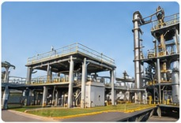
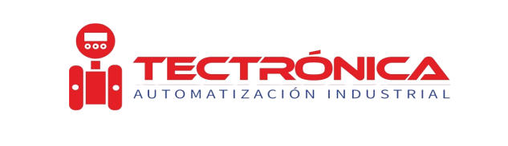

VERNE PERÚ S.A.C.
Technical Sales Support
- Preparación de materiales para campañas.
- Gestión de información de equipos instalados.
- Seguimiento de oportunidades comerciales.
ELECTRÓNICA · AUTOMATIZACIÓN · INSTRUMENTACIÓN
Profesional técnico con experiencia en instrumentación industrial, soporte técnico comercial y gestión de información para los sectores industrial y minero. Actualmente estudio Ingeniería Industrial para complementar mi formación técnica con una visión integral de los procesos y negocios.

Mi experiencia combina el conocimiento de instrumentación y automatización industrial con actividades de soporte técnico comercial, preparación de información para campañas y coordinación de procesos comerciales.
Mi formación en Ingeniería Industrial complementa esta experiencia y fortalece mi interés por la mejora de procesos, la organización del trabajo y el uso de herramientas tecnológicas.

Instrumentación, medición y automatización industrial.
Soporte técnico, información de productos y cotizaciones.
Organización de información y apoyo a procesos comerciales.

Universidad Privada del Norte
2025 – ActualidadTECSUP
2020 – 2023Instrumentación industrial
Automatización y PLC
Diseño técnico (AutoCAD, EAGLE)
Herramientas de oficina
Soporte técnico comercial
Mantenimiento electrónico
Proyecto desarrollado durante la formación técnica, enfocado en la mejora de un equipo industrial.
También cuento con experiencia en tarjetas electrónicas y selección de instrumentación industrial.
Interés en instrumentación industrial, automatización, soporte técnico comercial y mejora de procesos.